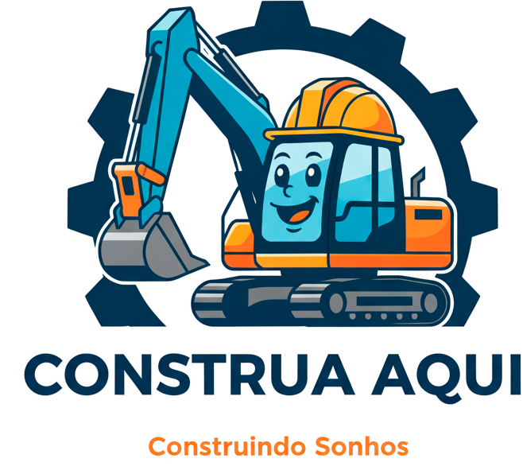
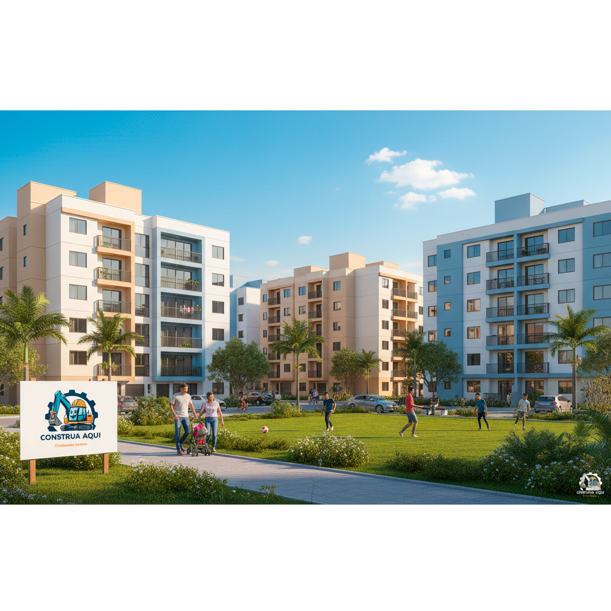

Nossa História

A Construa Aqui nasceu com a missão de transformar vidas por meio da moradia. Mais do que uma construtora, é um negócio social que acredita que ter uma casa digna não deve ser um privilégio, mas um direito. Para isso, oferece imóveis a valores mais acessíveis a partir de R$ 150.000,00 e com condições de aquisição facilitadas, inclusive para pessoas com restrições no nome. O compromisso da empresa vai além da entrega das chaves: 25% de todo o lucro é destinado a ONGs e causas sociais, fortalecendo projetos que promovem educação, inclusão e qualidade de vida. Assim, a Construa Aqui constrói não apenas casas, mas também esperança, comunidade e um futuro mais justo para todos.
A Construa Aqui acredita que condições facilitadas de aquisição não significam abrir mão da qualidade. Por isso, entrega condomínios, casas e apartamentos construídos com excelência, em parceria com fornecedores e profissionais reconhecidos no mercado. Cada projeto é pensado para unir conforto, segurança e acessibilidade, oferecendo moradias modernas e bem planejadas, mesmo para quem enfrenta dificuldades de crédito ou restrições no nome. Com o apoio de parceiros de confiança , a Construa Aqui garante que cada família receba não apenas um imóvel, mas um verdadeiro lar — sólido, seguro e feito para durar.
Nosso objetivo e metas
A Construa Aqui tem como propósito ir além da construção de imóveis: nossa meta é transformar realidades. Trabalhamos para oferecer moradias de qualidade com condições acessíveis, permitindo que mais pessoas tenham a chance de conquistar um lar digno, mesmo em situações de dificuldade financeira. Nosso sonho é grande: reduzir ao máximo, e um dia eliminar, o número de famílias vivendo em moradias precárias ou nas ruas. Cada projeto entregue é um passo nessa direção, construindo não apenas casas, mas também esperança, dignidade e um futuro mais humano para toda a população.